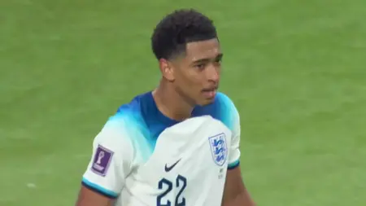

FIFA WORLD CUP EEUU 2026
¿Qué hará que Andijan, Bukhara y Tashkent sean los escenarios perfectos para la Copa Mundial de Futsal de la FIFA? Algunas estrellas ayudan a la FIFA a dar la respuesta.

El ex entrenador del Arsenal, Jefe de Desarrollo Mundial del Fútbol de la FIFA, habla sobre los atributos clave que deben tener los futbolistas del futuro para llegar a lo más alto.
Del vestuario al terreno de juego, accede en exclusiva a las 32 selecciones que lucharon por la gloria futbolística en la Copa Mundial de la FIFA 2022™.

Análisis de un jugador que irrumpió con fuerza en la Copa Mundial de la FIFA 2022™, imponiendo su juego a los rivales con extenuantes carreras con y sin balón.
